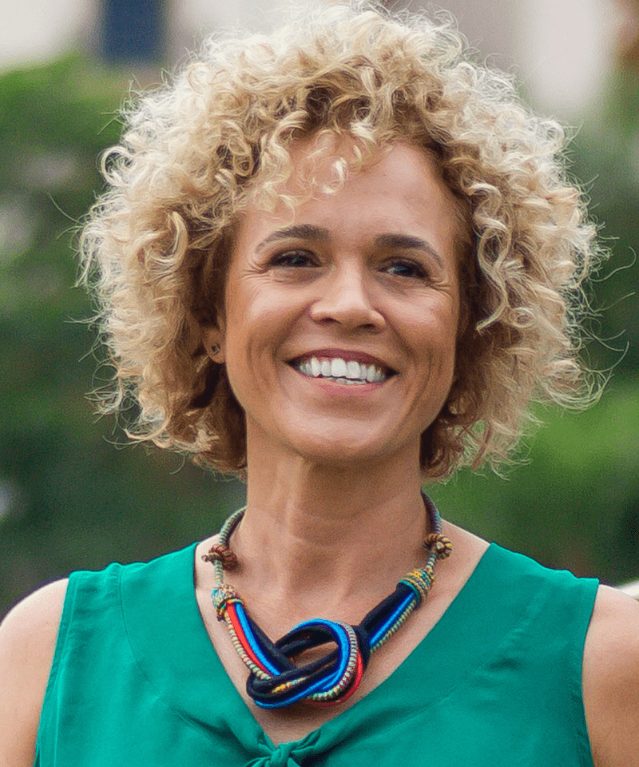
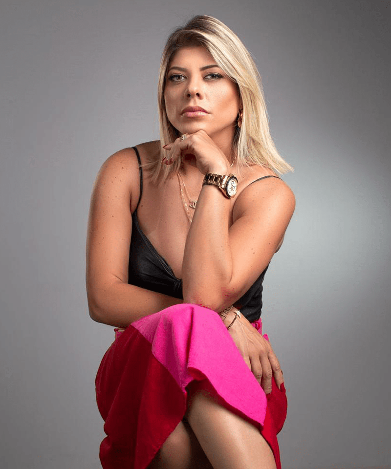
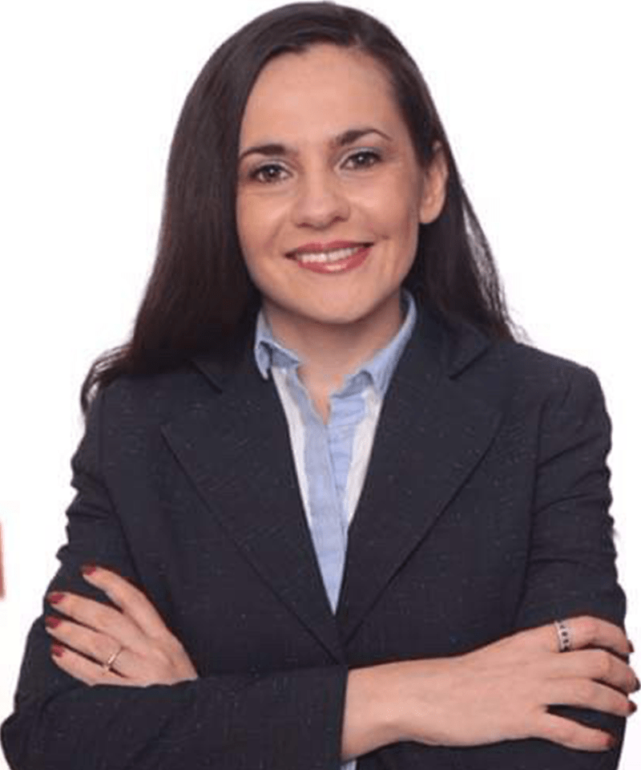

Participantes

Alline Pedra
Advogada
Brasil

Ana Beatriz Goldstein
Empreendedora Social
Brasil

Andreia Dahdal
Autora e Vendedora
Brasil

André Kok
Cofundador do Km Solidario
Brasil

Anna Paola Frade
Jornalista e Editora
Brasil

Bel Pimenta
PR • Relationship & Experience Marketing
Brasil

Bruna Leo
Co-Fundadora
FreedomeE
FreedomeE
Brasil

Celina Hissa
Designer
Brasil

Claudio Pelizari
Fundador Kindness in Business
Reino Unido

Dani Mello
Diretora Criativa @sou.simple
Brasil

Débora Aguillar
Fundadora da Lady Diomond Club
Brasil

Farai Ian Muvuti
CEO Southern African Times
Inglaterra

Fernanda Simon
Diretora do Instituto Fashion Revolution Brasil
Brasil

Francesca Giobbi
Idealizadora
FreedomeE
FreedomeE
Brasil

Gabriel Mayr
Co-Fundador Urece Sports and Culture
Brasil

Georgia Amaral
Empresária e Coach PNL
Brasil

Gil Bakhtiar
Arquiteto e Designer
França

Iboro Otu
Fundador da ALERT Africa
Nigéria

Isabelle Jabour
Empreendedora
Brasil

João Maia
Idealizador da Fotografia Cega
Brasil

Josi Medeiros
Coordenadora Moda Connect
Brasil

Larissa Ribeiro
Empresária
Brasil

Liliana Gomes
Fundadora da JOY Management
Brasil

Luiza Brunet
Empresária e Palestrante
Brasil

Marcella Kanner
Head de Comunicação Corporativa e Marca da Riachuelo e Diretora de Comunicação do Instituto Riachuelo.
Brasil

Marcio José Felipe
Empreendedor Social
Brasil

Maria Christina Mendes Caldeira
Fundadora Togerther4Earth
Estados Unidos

Dr. Mariana Todorova
Professora Associada e Autora
Bulgária

Marianela Mirpuri
Fundadora Hera
Portugal

Muftah Benomran
CEO da Al Omran LTD
Reino Unido

Priscilia Queiroz
CEO da Escola Rede Mulheres
Brasil

Raphael Kling
Tecnologia Disruptivas
Brasil

Ricardo Gomes
CEO da SSTUDIO Marketing
Brasil

Roberta Vieira
Gestora EnLife Group
Brasil

Rodrigo Muller
Criador do MODA.DOC América Latina
Brasil

Rodrigo Vertulo
Engenheiro com foco na Acessibilidade
Brasil

Rosi Orozco
Autora e Ativista
México
Ruberson Saraiva
Fundador Salutem Brasil, Sócio Grupo BVM, VP Femicro-DF, Sócio/Presidente Grupo Parlante
Brasil

Sandro Vita
Empresário e Escritor
Brasil

Tania Vieira
Diretora Operacional at EnLife Group
Brasil

Valéria Mattoso
Advogada
Brasil

EVENTO ONLINE GRATUITO!
Freedomee.com
ECONOMIA CIRCULAR COLABORATIVA
Como Viver em um Ambiente Global e Justo
26.10.21 - 12:00 às 18:00 (Horário Reino Unido)
Com abertura em Londres na “House of Lords” do Parlamento Inglês
Aproveite e também se cadastre na Plataforma Digital FREEDOMEE.COM e se conecte a infinitas oportunidades de negócios.
EVENTO ONLINE GRATUITO!
Freedomee.com
ECONOMIA CIRCULAR COLABORATIVA
Como Viver em um Ambiente Global e Justo
26.10.21 - 12:00 às 18:00 (Horário Reino Unido)
Com abertura em Londres na “House of Lords” do Parlamento Inglês